These widgets just display the <text> and wait for the user to press a button. The buttons in the yesno widget are (surprise, surprise !) Yes and No, while a single OK button is used for the msgbox.
The yesno widget accepts the --wizard transient option (that may itself be used together with --no-cancel); in this case the Yes and No buttons are replaced by the Previous, Cancel (if --no-cancel is not in force) and Next buttons. The yesno widget also accepts the --default-no transient option.
Both widgets accept the --timeout, --icon, --help and --check transient options.
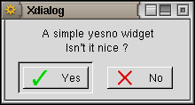 
The infobox displays a <text> message and accepts an optional <timeout> parameter (the default is 1000). The infobox vanishes after <timeout>/1000 seconds or when the OK button is pressed (this button may be suppressed by using the --no-buttons transient option).
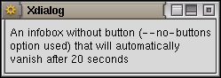
If a 0 timeout is passed as parameter, then the infobox widget behaves differently:
- The OK button is replaced by a Cancel button (unless the --no-buttons transient option is in force).
- It accepts messages from stdin (much in the same way as the gauge widget). These messages may be "XXXX" (in which case the infobox is closed) or new <text> enclosed by "XXX" markers; newlines can be inserted into the <text> (in the same way as for the gauge widget).
- It waits until the Cancel button is pressed, or the "XXXX" message is received, or until the stdin is put at EOF (unless the --ignore-eof transient option is in force).
This widget also accepts the --icon transient option.
See also the (c)dialog compatibility notes.
This widgets displays the <text> and a progress bar (the gauge) which starting position is set according to the <percent> parameter (if any, the default being 0%).
Once set up, it accepts new percentage values (the gauge being updated accordingly) on stdin as well as new <text> enclosed by two "XXX" markers; a newline can be inserted into the new <text> by issuing:
echo "\\n"
between each line sent to Xdialog stdin (i.e. Xdialog must actually receive on stdin a string holding the two "\" and "n" characters, and not just a line feed).
The gauge widget vanishes once the percent value exceeds 100% or when its stdin is put at EOF (unless the --ignore-eof transient option is in force).
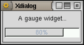
This widget also accepts the --icon transient option.
See also the (c)dialog compatibility notes.
The progress widget looks exactly as a gauge widget but behaves differently. It is designed so that it can interact easily with console utilities issuing progress reports on their output stream, either in the form of "dots" (or hashes, stars, etc...) or of a number (percentage or any counter).
The <text> parameter is displayed and may be appended with a message which is read from Xdialog stdin and which number of characters is <msglen>. If you don't care about the leading message sent by the console utility before the actual "dots"/values are sent, then you may pass the number of characters to be ignored as a negative value. Unlike the gauge widget, there is no way to change this text once it is setup and displayed. When <msglen> is omitted (or when <msglen> is 0), none of the leading message characters (if any) are appended to <text> nor ignored (beware that in this case, any leading message characters will be taken into account as "dots" !).
The progress bar is initially set to 0 and will accept any number of "dots" or any counter value below <maxdots>. Each time a new "dot" or a new value is received on the Xdialog input stream (stdin), the progress bar is updated accordingly (a percentage is also calculated and shown into the progress bar). If <maxdots> is omitted or passed as 0, then a default max value of 100 is used.
The widget is automatically closed whenever the <maxdots> number is exceeded or when Xdialog stdin is put at EOF.
Here are two examples of how to use this widget: allrpms and format1440.
This widget also accepts the --icon transient option.
The --inputbox widget displays a <text> together with an entry field accepting any string. The string typing into the field may be hidden (entered characters are displayed as "*") thanks to the --password transient option. The entered string is returned (printed to Xdialog output stream) when the OK button is pressed (nothing is returned if the Cancel button is pressed; this button may itself be removed from the widget by using the --no-cancel transient option). An optional <init> string may be passed so to be setup as the default entered string (which will appear into the text entry field when the widget is drawn).
The --2inputsbox and the --3inputsbox widgets allow for two or three entry fields into the same box (see the --password transient option to learn how these fields are affected). A <label> is setup above each field (see the --center, --left, --right and --fill common options to learn how the labels justification and alignement can be affected); as for the <text> parameter, the <label>s may hold "\n" sequences IOT force text splitting into several lines. The <init> strings cannot be omitted but may perfectly be NULL (empty) strings.
All three widgets also accept the --interval, --timeout, --icon, --no-buttons, --default-no, --wizard, --help and --check transient options.
See also the (c)dialog compatibility notes.
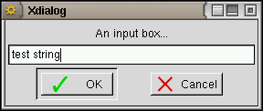 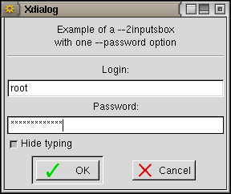
The combobox displays a <text> together with an entry field to which a pull-down list of <items> is attached: the user may choose an item into the pull-down list or edit the entry field (provided the --editable transient option was specified). Xdialog returns the entry field contents once the OK button is pressed.
This widget also accepts the --interval, --timeout, --icon, --no-buttons, --default-no, --wizard, --help and --check transient options.
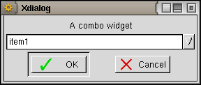
The --rangebox widget displays a <text> together with a horizontal slider which scale ranges from <min value> to <max value>. The initial position of the cursor on the slider is set to <default value> (when the <default value> parameter is omitted, the cursor position is set to the <min value>). The value corresponding to the current cursor position is returned (printed to Xdialog output stream) when the OK button is pressed (nothing is returned if the Cancel button is pressed; this button may itself be removed from the widget by using the --no-cancel transient option).
The --2rangesbox and the --3rangesbox widgets allow for two or three sliders into the same box. A <label> is setup above each slider (see the --center, --left, --right and --fill common options to learn how the labels justification and alignement can be affected); as for the <text> parameter, the <label>s may hold "\n" sequences IOT force text splitting into several lines. The <def> values cannot be omitted.
All three widgets also accept the --interval, --timeout, --icon, --default-no, --wizard, --help and --check transient options.
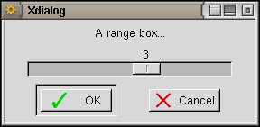 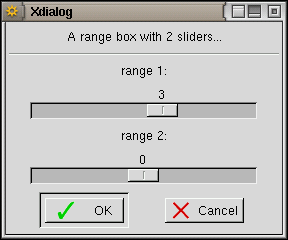
These widgets are more suited than ranges boxes for input of values with units. They display a <text> and one to three spin buttons which value may range from <min> to <max> and defaults to <def>. Each spin box is followed by a <label> (more likely a unit name or a separator); this label is not setup if passed as an empty string.
All three widgets accept the --interval, --timeout, --icon, --default-no, --wizard, --help and --check transient options.
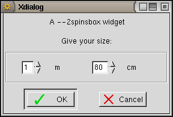
These widgets allow to display a text file contents. If the <file> parameter is replaced with a "-" (minus sign), then the text to be displayed is read from Xdialog stdin. The --editbox allows to edit the text and returns it (i.e. prints it on Xdialog output stream) once the OK button is pressed.
Both widgets accept the --timeout, --help, --default-no, --no-cancel, --fixed-font, --print, --wizard and --check transient options. The textbox also accepts the --no-buttons transient option.
See also the (c)dialog compatibility notes.
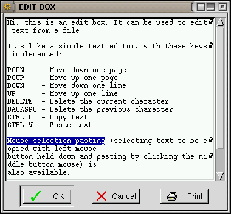
The tailbox widget ressembles to a textbox but the text is automatically scrolled to the end and is regularly updated (so that any addition to the file is reflected into the tailbox; note that if the file is truncated, deleted or overwritten by another program while the tailbox is displaying it, the update is stopped). As for the textbox, if the <file> parameter is replaced with a "-" (minus sign), then the text to be displayed is read from Xdialog stdin.
This widget accepts the --timeout, --smooth, --help, --default-no, --no-buttons, --no-ok, --no-cancel, --fixed-font, --print, --wizard and --check transient options.
See also the (c)dialog compatibility notes.
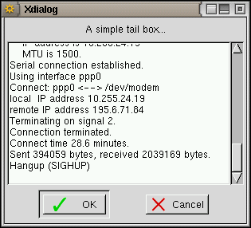
The logbox is much like a tailbox but it may use different colours (both foreground and background) for each line it displays. The messages (i.e. each line) may as well be time/date stamped thanks to the --time-stamp and --date-stamp transient options. Moreover the messages may appear in reverse order (i.e. last message at the top of the list) thanks to the --reverse transient option.
On the other hand, the log box cannot use the --fixed-font and --print transient options, the text is not wrapped automatically when the box is not large enough for lines to fit in it (but you may use the horizontal scroll bar to view the whole lines), and the text displayed can't be selected with the mouse (for copy and paste purpose).
Colour selection is controlled by the insertion of escape sequences into the text held in <file>. Recognized escape sequences are ESC[1;30m to ESC[1;38m (for foreground colour) and ESC[1;40m to ESC[1;48m (for background colour), any combination of foreground and background colours being accepted as well (e.g. ESC[1;31;43m). Note that only the first escape sequence encountered in each line is taken into account, and whatever is its actual position into the line (at the start of the line, embedded in the text, or at the end of the line), the whole line will be given the corresponding attribute(s) (i.e. you can't highlight a single word into a line). By using the --keep-colors transient option, you can instruct Xdialog to keep the foreground and background colour setting from one message to the others (i.e. until a new escape sequence is received).
This widget also accepts the --timeout, --smooth, --help, --default-no, --no-buttons, --no-ok, --no-cancel, --wizard and --check transient options.
| 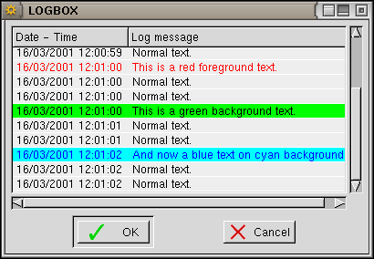 |
|
This widget presents the <text> together with a menu. For each line in the menu, there must be a <tag> and an <item> parameters. The tag is displayed left (provided that the --no-tags transient option is not in force) and the menu item right.
The <help> parameters are only to be used if the --item-help transient option is in force; the help text is then displayed into a status bar below the menu each time a new menu item is selected.
The <menu height> is the number of lines (in characters) to which the menu sub-window should be set (a height of 0 will let Xdialog auto-size); of course the overall widget <height> must be big enough (or the widget auto-size must be in force), else the <menu height> will not be taken into account.
The default selected row in the menu is normally the first row, but this can be changed thanks to the --default-item transient option.
Although there is no <status> parameter for the menubox, it is possible to make a menu item unavailable by setting its <tag> to an empty string (in this case, if the --no-tags transient option is not in force, the tag will appear as a tilde). The unavailable rows appear in dark grey text on light grey background.
When the OK button is pressed, the widget prints, onto the Xdialog output stream, the tag corresponding to the last selected menu entry.
This widget also accepts the --interval, --timeout, --icon, --default-no, --wizard, --help and --check transient options.
See also the (c)dialog compatibility notes.
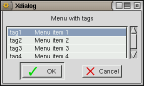
These widgets present the <text> together with a list of <item>s each one being prefixed with their corresponding <tag> (provided that the --no-tags transient option is not in force).
Each <status> parameter (which value may be "on", "off" or "unavailable") tells to Xdialog if the corresponding <item> must be selected as default ("on"), unset but available ("off") or "unavailable" (i.e. visible but not selectable); note that it is also possible to make an item unavailable by setting its <tag> to an empty string. Exactly one item is selected at any time in a radiolist, while the checklist allows for any number of items (0 to all items) to be selected at a time.
The <help> parameters are only to be used if the --item-help transient option is in force; the help text is then displayed as tooltips when the mouse pointer stays long enough (usually 0.5s) over an item.
The <list height> is the number of lines (in characters) to which the list sub-window should be set (a height of 0 will let Xdialog auto-size); of course the overall widget <height> must be big enough (or the widget auto-size must be in force), else the <list height> will not be taken into account.
The tag(s) of the selected item(s) are sent onto the Xdialog output stream when the OK button is pressed. For the checklist, each tag is separated from the other with a "/" character; this separator may be changed by using either the --separator or the --separate-output common options.
These widgets also accept the --interval, --timeout, --icon, --default-no, --wizard, --help and --check transient options.
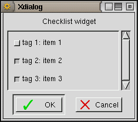 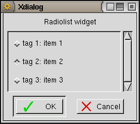
This widget presents the <text> together with two list sub-windows and two buttons (Add and Remove). In the left-most sub-window all unselected and unavailable items are listed (those items either had an "off" or "unavailable" <status> or have been Removed from the list by the user). The right-most sub-window presents the list of all selected items (those items either had an "on" <status> or have been Added to the list by the user). Note that it is also possible to make an item unavailable by setting its <tag> to an empty string.
The <help> parameters are only to be used if the --item-help transient option is in force; the help text is then displayed as tooltips when the mouse pointer stays long enough (usually 0.5s) over an item.
The <list height> is the number of lines (in characters) to which the list sub-window should be set (a height of 0 will let Xdialog auto-size); of course the overall widget <height> must be big enough (or the widget auto-size must be in force), else the <list height> will not be taken into account.
IOT Add or Remove items, the user must first highlight them and then press the proper button. The items appear in the order in which they were added/removed and this order is kept when the result is sent to the Xdialog output stream (when the OK button is pressed): the corresponding <tag>s are sent in the exact order in which the associated items appear in the right-most sub-window. Each tag is separated from the other with a "/" character; this separator may be changed by using either the --separator or the --separate-output common options.
This widget also accepts the --interval, --timeout, --icon, --default-no, --wizard, --help and --check transient options.
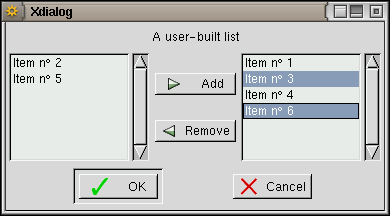
This widget presents the <text> together with a sub-window holding a tree of the <item>s in the order in which they appear into the Xdialog command line and at the associated <item_depth> (which should range from 1 to 24). Note that from one item to the next, the depth must never increase by more than one while it may decrease by more than one. The <list height> is the number of lines (in characters) to which the list sub-window should be set (a height of 0 will let Xdialog auto-size); of course the overall widget <height> must be big enough (or the widget auto-size must be in force), else the <list height> will not be taken into account. When the OK button is pressed, the widget sends the <tag> associated with the last selected item to the Xdialog output stream.
Each <status> parameter (which value may be "on", "off" or "unavailable") tells to Xdialog if the corresponding <item> must be selected as default ("on"), unset but available ("off") or "unavailable" (i.e. visible but not selectable); it is also possible to make an item unavailable by setting its <tag> to an empty string. Note that if an item with an "unavailable" <status> is the root of a branch of the tree, then all the items in this branch can't be accessed (whatever is their own <status>). Exactly one item is selected at any time.
The <help> parameters are only to be used if the --item-help transient option is in force; the help text is then displayed as tooltips when the mouse pointer stays long enough (usually 0.5s) over an item.
This widget also accepts the --interval, --timeout, --icon, --default-no, --wizard, --help and --check transient options.
Note: there is a bug in all GTK+ releases (up to and including v1.2.10) that prevents Xdialog to highlight the default selected item (the "on" <status> of this item is actually taken into account but the item can't be highlighted when the widget is drawn).
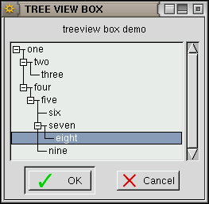
These widgets make use of the GTK+ file selector. They allow to select a filename (for the fselect widget) or a directory name (for the dselect widget). The <file> (for fselect) and <directory> (for dselect) parameters are used as the default selection. Using the --no-buttons transient option prevents the New directory, Delete file and Rename file buttons to be displayed in the file selector. The --help, --wizard, --no-cancel and --default-no transient options are allowed, even if --no-buttons was specified. The --check and --timeout transient options may also be used. The widgets return the user-selected file/directory name once the OK button is pressed.
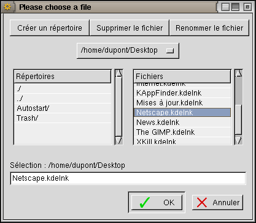 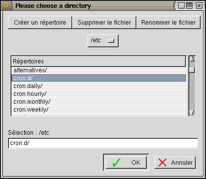
This widget makes use of the GTK+ color selector. It displays the <text> and allows the user to choose a colour, returned as a RGB tripplet, each value in the tripplet being between 0 and 255 (example: "50 68 205" which means Red=50, Green=68 and Blue=205). When the <red> <green> <blue> parameters are given, then the color selector cursors are preset to these values.
The --timeout, --help, --wizard, --no-cancel, --default-no and --check transient options may also be used.
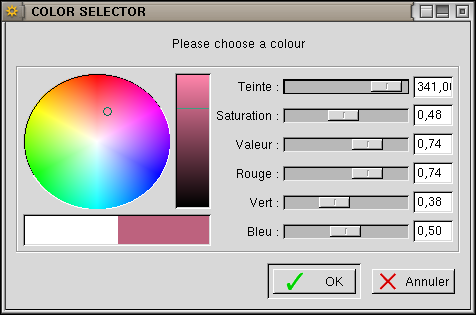
This widget makes use of the GTK+ font selector and allows the user to choose a font. A font name is to be passed (even as an empty string if needed) and the corrsponding font is displayed. On successful return, the Xdialog then returns the name of the font selected by the user.
The --timeout, --help, --wizard, --no-cancel, --default-no and --check transient options may also be used.
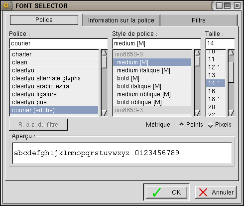
This widget displays the <text> together with a calendar showing the month holding the date defined by the <day> (1 to 31) <month>, (1 to 12) and <year> (1970 and over) parameters (if any of these parameters is 0 or if they are all omitted, then the current date is used). The user may then browse the calendar and choose another date. Once the OK button is pressed, the widget returns the user-selected date (in the form DD/MM/YYYY).
This widget also accepts the --interval, --timeout, --icon, --default-no, --wizard, --help and --check transient options.
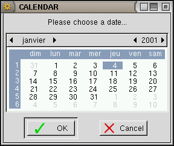
This widget displays the <text> together with the time given in parameter (or the current time if <hours>, <minutes> and <seconds> are omitted) into three "spin buttons" (hours, minutes and seconds). The user may change the time displayed and the widget returns the user-set time (in the form HH:MM:SS) once the OK button is pressed.
This widget also accepts the --interval, --timeout, --icon, --default-no, --wizard, --help and --check transient options.
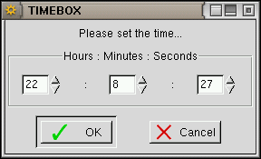